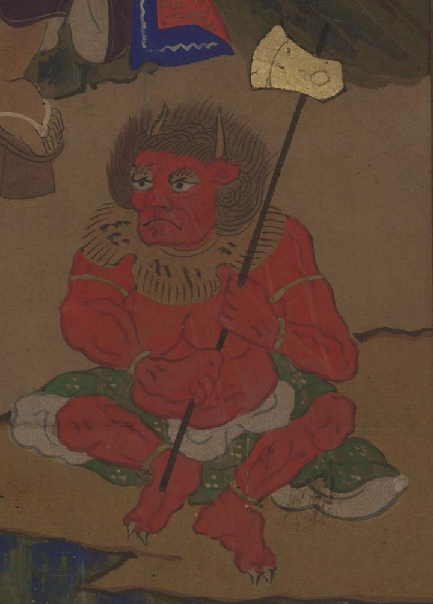

役行者に従う前鬼。赤く、行者が進む道を切り開くための斧を携えている。
出典：親書誌：U426_nichibunken_0311：[役行者と前鬼・後鬼]；エンノギョウジャ ト ゼンキ・ゴキ／日付：2014／資源識別子：U426_nichibunken_0311_0001_0000
Copyright (c)2010- International Research Center for Japanese Studies, Kyoto, Japan. All rights reserved.